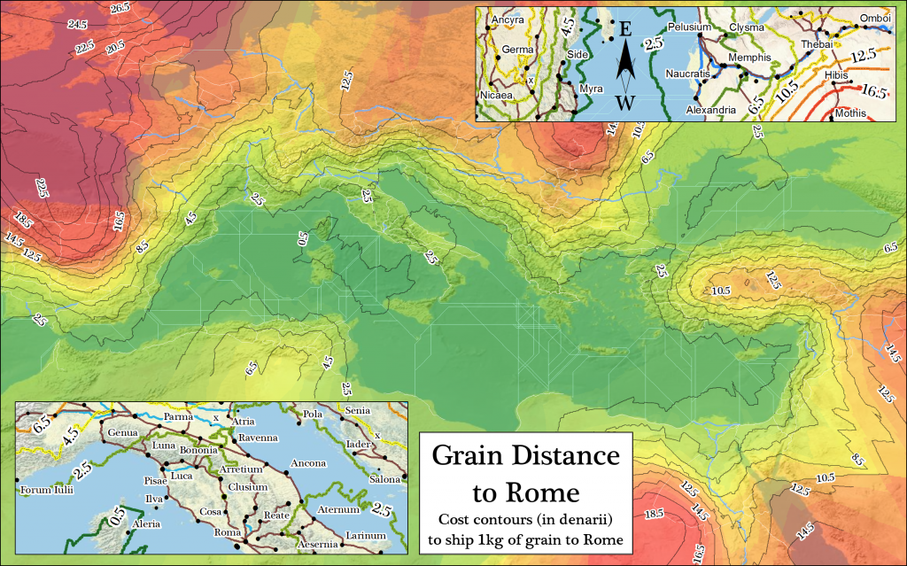
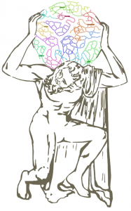

A map of expense contours developed from the ORBIS model. Each contour line denotes the cost to deliver goods to Rome.
This event is open to the public.
Where: Wallenberg Hall Room 124
When: May 2, 2PM-3PM
On May 2nd, I’ll be presenting a model of the Roman World, which I created with Walter Scheidel over the course of the last eight months. Data-driven models take many forms in their use and presentation, and in this case we’ve created a website that acts not only as an interface into that model but as a representation of the model itself. It’s not the entire Roman World, and by that I mean not that it doesn’t cover the pieces of Eurasia and Africa associated with Rome, but rather that it only models the transportation of individuals and goods. I find this to be an important distinction to make about representation and the “world”, which tends to have a very fluid definition in traditional humanities scholarship but can quickly devolve into a purely geographic term in digital humanities scholarship.
I’m not the principle investigator but rather technical lead on the project and also as a member of the Stanford Library. On one hand, this means that I can’t speak with authority to the historical principles that underlie the model. So, while I will be capable of demonstrating the variation in time and expense for travel from Rome to Britain over the course of a year, I cannot speak to the decisions as to how to rank particular sites or how to evaluate the cost of particular routes. That said, the representation of the structure of the model I alluded to earlier includes the technical elements that went into building the data and functions as well as the historical research required to design the relationships within the model.
The integration of digital resources with humanities scholarship is nothing new. GIS and spatial analysis have increasingly been used by historians as part of their craft, and the Spatial History Project has been actively making this possible at Stanford for over half a decade. It’s gotten to the point that the development of common resources and applications for the storage and presentation of geodata is a common theme both in academia, such as Harvard’s WorldMap or Geodata@Berkeley, and in the public sphere with projects like GeoCommons. Such broad penetration of spatial data affords us the opportunity to look ahead toward even more sophisticated uses of digital methods and objects.
One way that sophisticated representation of scholarly arguments can occur is to embed the scholarly argument within the structure of the digital object. Rather than creating a separate collection of datasets that are alternately analyzed and visualized, humanities scholars can begin to define how these points of data cause and are affected by each other. Interrelation, not correlation, allows for the scholar to situate their argument within the digital object. This is the definition of a model–a collection of data coupled with functions that define how the data interact with each other.
Compare this to a typical digital map, whether static, interactive or dynamic. Data visualization is just a new word for illustration and figure, and just because an illustration is a geographic one does not make it particularly different. Static and animated maps are typically offered as a generic tool (usually an index) to be used to look for spatial correlation (spatio-temporal correlation in the case of maps that are animated by time) by an expert observer. In the case of maps of historical phenomena, this means a historian looking for structural elements, anchored in space (and therefore amenable to spatial principles like Tobler’s First Law), that can be associated with historical phenomena not represented on the map but represented alongside or otherwise divorced from it in linear text. This “other phenomena” includes political movement, religious tension, ambition, administration, colonization, extraction, oppression and every other active property that makes up history.
It is this “other phenomena” that needs to be represented in digital form. Until then, we are only displaying arguments of correlation and not of causation. A map that shows the Angkor empire grow and recede can be disputed based on the quality of data or decision to display shaded regions or even the choice of using tweens in the map. But, since it does not embed any procedural claim that one entity affected another, or that the actions of members of one group somehow influenced another, then the only engagement with such claims can occur within the realm of the narratives that surround such a map in print.
Ian Johnson’s Khmer TimeMap
If, however, the map were not simply an animation of spatial change over time but rather a visual representation of some model that indicated how a process of Khmer Imperialism would function and how it might create and then be dismantled by another process, then it is a scholarly argument that can be meaningfully engaged with.
Narrative text would necessarily surround such an argument, especially in the early phases of production of such digital scholarly work because it would be so unfamiliar, but engagement with it would be with causal claims and not simple correlation. Like traditional scholarly works, it is a tool–a device to be used in other research. Good research serves as the building blocks of later, better research. But unlike a pure tool like Voyeur, and just like a traditional scholarly work, a model can be contested, amended and extended. The ORBIS model makes specific claims about the shape and size of the Roman World and how that shape changed based on goals, means and even the time of year of the act of participation within it. These claims are not simply correlative, and can be disputed or enhanced by later scholarship within the same architecture of models. This may not sound like the most interesting claim, especially when compared to the lofty list of “other phenomena” presented earlier, but it is only through grappling with the comparatively simple processes, such as transportation, that we can lay the groundwork to deal with extremely complex ones, like religious diffusion.1
Models are traditionally something that exists elsewhere, as part of earlier research or in a sort of semi-religious state to be consulted like the Oracles of old. Instead, ORBIS presents the model as a product of digital humanities research, to be contested or expanded by later work. As such, exposing the structure of the model in as many manners as possible is paramount. The data will be available via API, and the functions will all be published so that they can be reviewed for validity and integrated into other research. The creation of a transportation network model of the classical world would likely require a large grant and several interested working groups, as well as developing methodologies for mapping networks in less historically attested regions. This is one possible direction that later researchers could take. Another is to focus on and refine the model of Rome or develop a component that deals with the production of goods and raw materials, or the transmission of information. All of these would require that historians formally define historical processes for computational representation, allowing for the expression of such processes in a form other than linear, narrative text.
There is another reason to move away from data and toward models: data does not scale. ORBIS provides route data for travel between 700 sites in the Roman World, with variation based on month, type of travel and priority. If we were to simply generate individual polylines for each route, this would be 211,680,000 separate lines.2 If the epidemic of big data in the modern age has taught me anything, it’s that we should focus on describing processes and not building great archives of data. Nick Montfort suggested that we need a Digging Into Code grant instead of a Digging Into Data grant, to shift the focus of digital humanities research toward process. The ORBIS dataset is puny in comparison to many high-profile digital humanities projects, with only a few thousand pieces of data, but the code that runs the multimodal, temporally dynamic network, as well as the code that provides users with an interface into that network, is very sophisticated.
The academic publishing industry continues to grapple with how it can continue to support traditional scholarly works while providing the opportunity for scholars to create rich digital scholarly works. While many of the methods and technologies needed to create digital scholarly works are mature, they still require a level of creativity and administration far above that necessary for a traditional narrative. It is, to put it crudely, far easier within the academic sector to format, typeset and edit a linear narrative than it is to deal with even interactive and dynamic maps, much less true models. That’s why so much of the innovation in digital publishing is still confined to narrative representation of arguments, such as that found in a typical digital journal or a commons-based peer collaborative or social media-based system. Given the high cost and specialized skills needed to create and publish digital scholarly work, it seems the best model, if you’ll pardon the pun, is for the university library to provide both research support, avenue to publish and resources to archive and maintain this new genre.

1This is not an idle example. Lew Lancaster suggested in his keynote address, “Crossing a Boundary: Where, When, How,” (UVa, Feb 2009) that the origin of Mahāyāna Buddhism would be better understood if we had a functioning network model of the sea and land trade routes typically known as the Silk Road.
1This is very much a back-of-the-envelope calculation. Many of these routes would overlap, reducing the high value, but this does not take into account the ability to constrain modes or use different categories of sea or river transportation, which would increase the number.